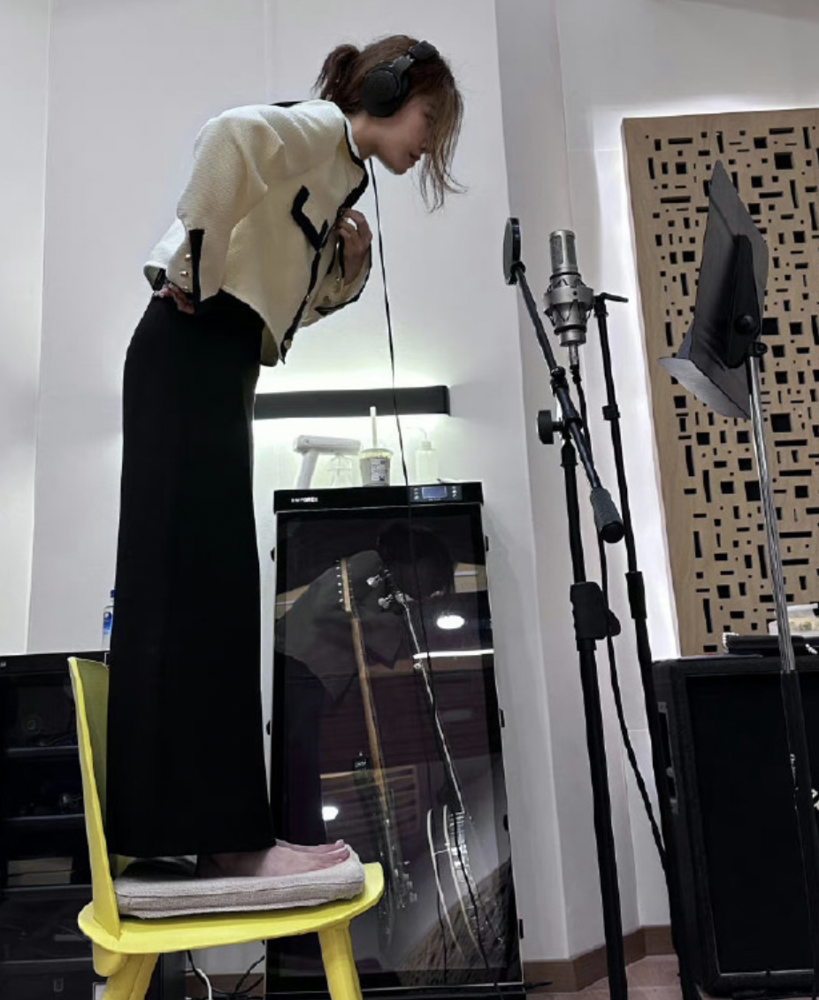
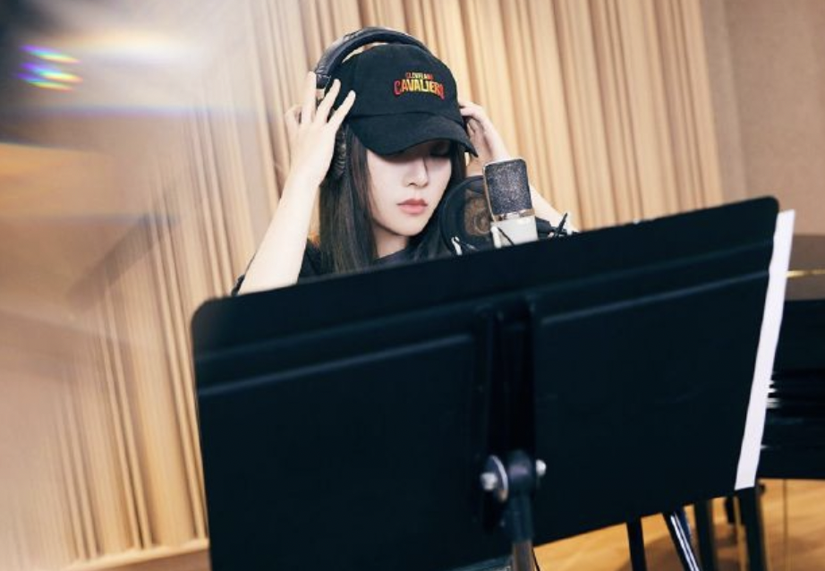
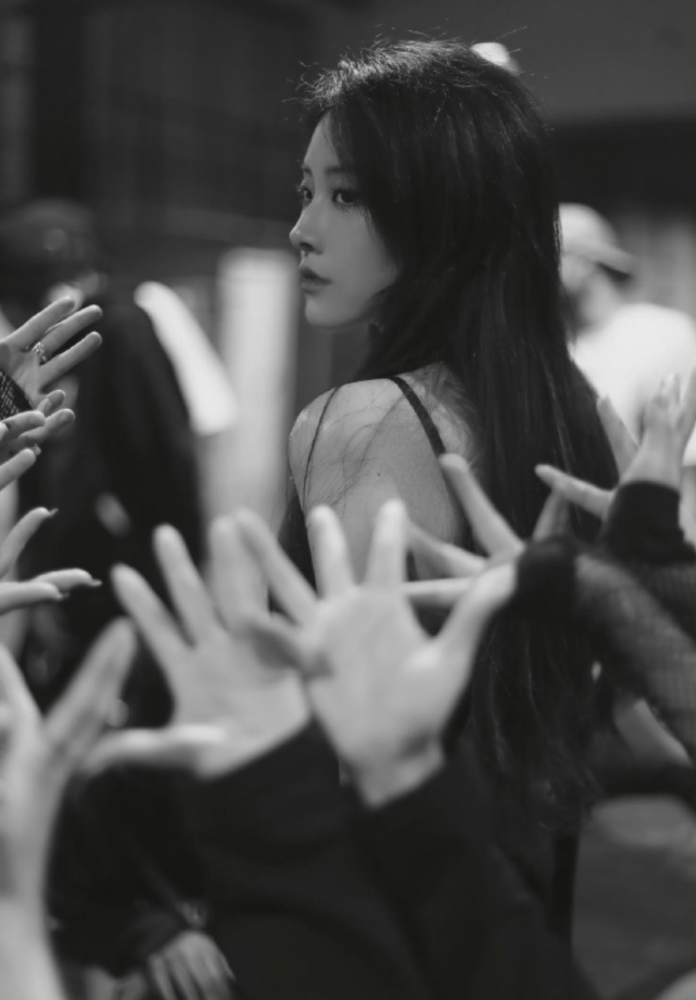

Yu Yan has received widespread attention and love for her unique timbre, soulful interpretation, and changeable music style. Yu Yan's music works cover a variety of styles such as pop, electronic, R&B, etc., showing her extensive musical literacy and experimental spirit. Her voice is highly recognizable, her timbre is clear and penetrating, and she can easily express the delicate levels of different emotions. Yu Yan's singing is full of emotion and can penetrate people's hearts. Yu Yan is good at conveying complex emotions through music, allowing listeners to resonate with them. She does not stick to a single musical style but incorporates a variety of musical elements into her works, demonstrating her musical diversity and broad musical vision. Yu Yan constantly tries new elements and styles in music production. She has the courage to innovate and experiment, making her music full of freshness and modernity. Her musical compositions are often well produced and reflect a high standard of professionalism in terms of arrangement, mixing, and production.


